STENAの出発点
朝起きると、喉がカラカラ。
冬になると、
そんな朝が増えませんか？
私たちが冬の寝室について考えたとき、気になったのが、
湿度だけで、本当に十分なのか？ということでした。
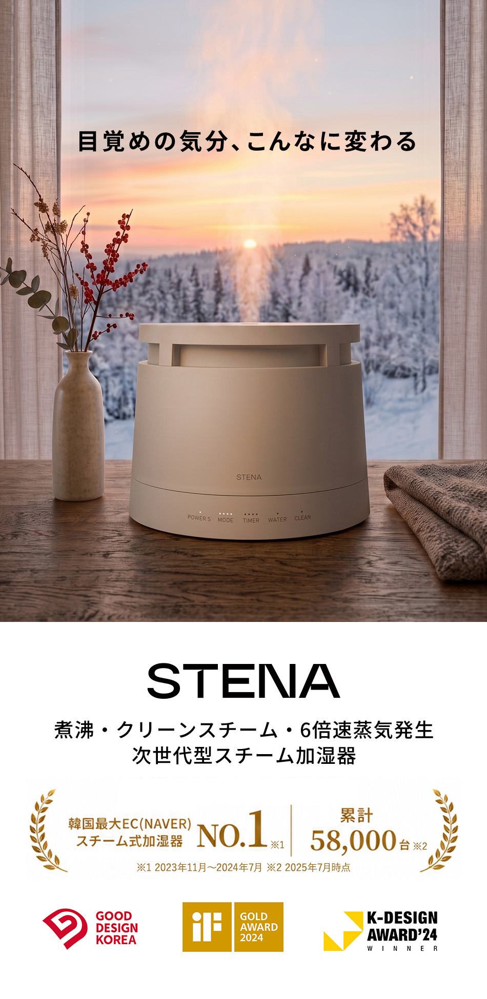
お一人様1回だけ
クーポンでお得に購入できるチャンスは今だけ
クーポン適用で月々 2,462円 2045円 税込 2,250円
クーポンコード STENA
通常価格 78,000円(税込)
キャンペーン価格 65,000円(税込)
さらに
クーポン使用で 10,000円OFF
クーポン適用後
月々 2045 円 (税込 2,250円)
一括購入時の価格 54,000 円（税込）
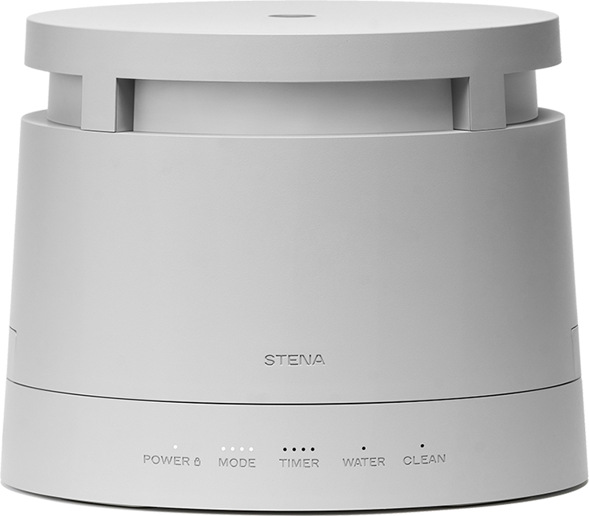
お部屋の温湿度をいつでも確認できる温湿度計を特別にお付けします。
この心地よさを、まずは実際に体感してください。自信があるからSTENAは「60日間の返金保証」付き。リスクなしで、気軽にお試しください。
＞ 詳しく見る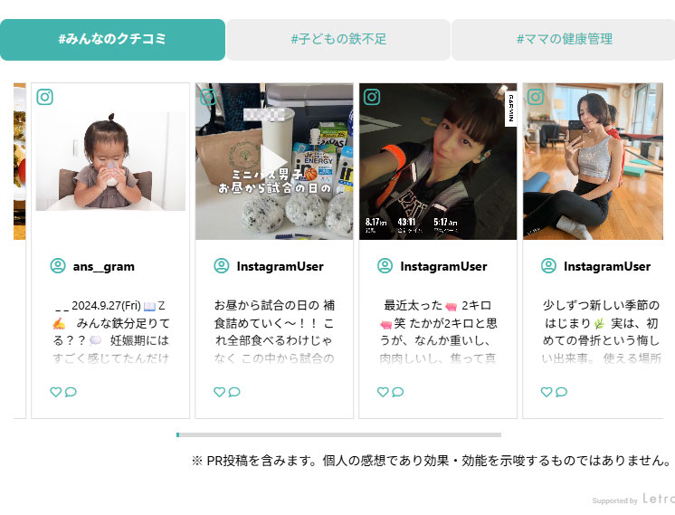
STENAの出発点
私たちが冬の寝室について考えたとき、気になったのが、
湿度だけで、本当に十分なのか？ということでした。
そう聞くことが多いと思います。
その50%、喉には届いていない。
室温 12℃
50%
湿度計が見ている空気
体内 37℃
12%
喉が受け取る空気
室温12℃・湿度50%の空気は、体内で37℃まで温まると湿度は約12%。※
つまり、湿度計では「50%」でも、体にとってはカラカラの空気です。
※室温12℃・相対湿度50%の空気を、水分量を変えずに37℃まで加温した場合の相対湿度の概算値です。実際に吸い込んだ空気は、鼻や喉の粘膜から水分を受け取りながら体内に入ります。
では足りない水分はどこから補われるのか？
冷たい空気を吸うほど、水分は奪われていく。
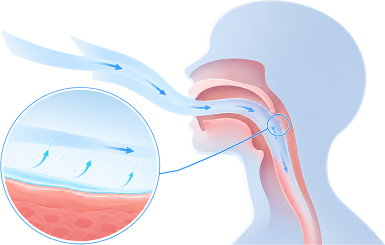
寝室は、毎晩、何時間も眠る場所。
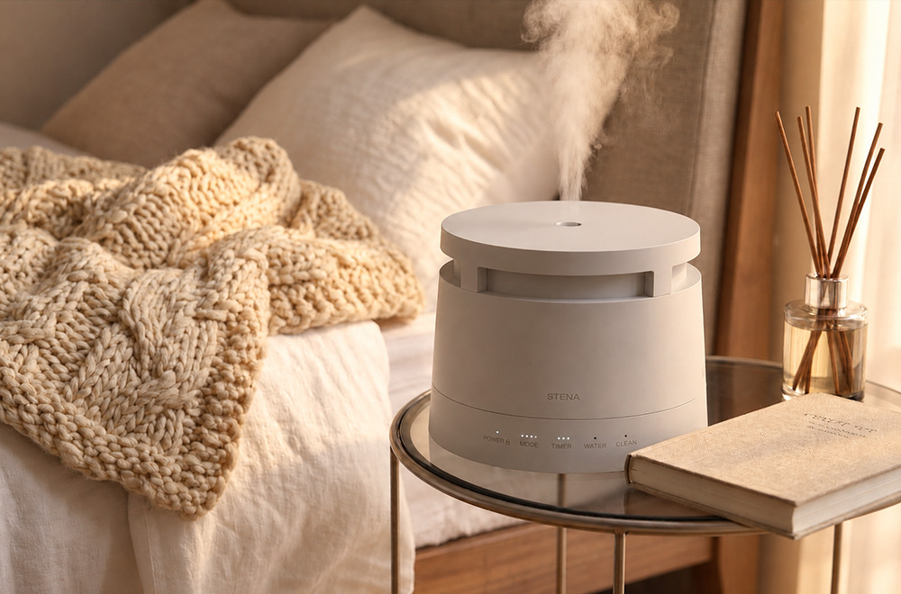
だったら、
最初から熱と湿度を一緒に届ければいい。
冬の寝室への、STENAの答え
水を加熱して蒸気にするから、
暖かさと潤いを、同時に届けられる。
ただ湿度を上げるためではなく、
冬の寝室そのものを、暖かく、潤いのある空間にするために。
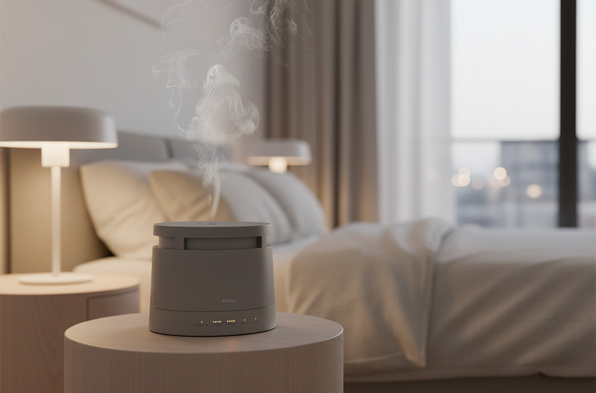
毎日の眠りを支える場所だからこそ。
私たちは、寝室のための加湿を考えました。
STENAのスチーム式加湿器
水の加熱で生まれた温かい蒸気だから、冬の寝室の空気を冷やさずに加湿できます。
空気が暖まる
空気が冷える
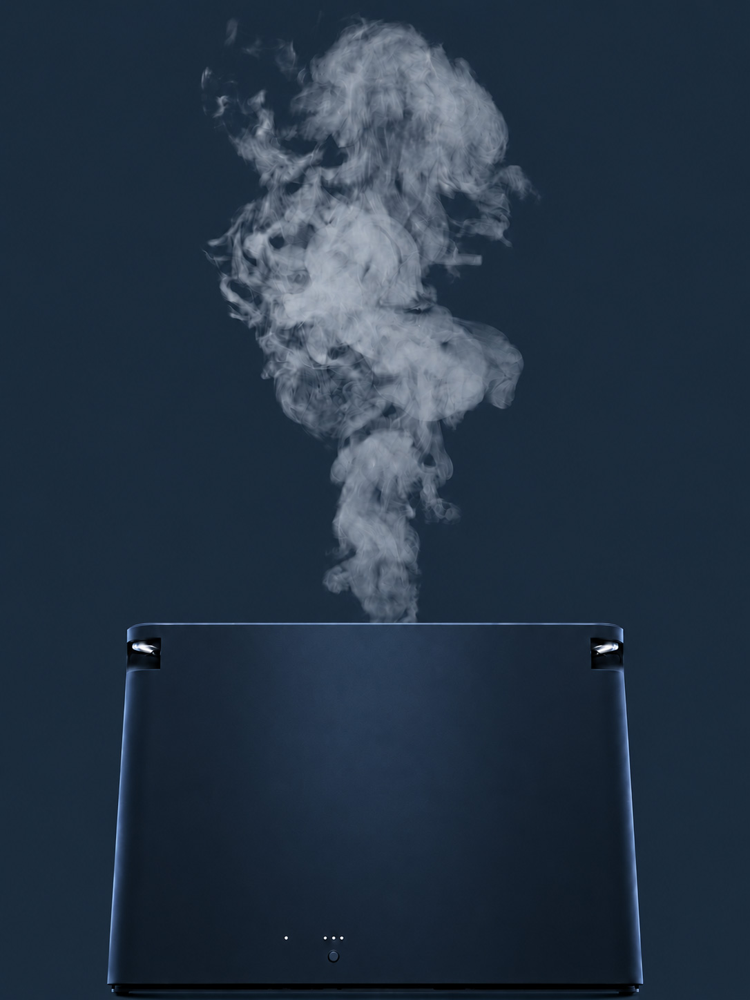
毎晩、何時間も過ごす寝室だから、蒸気の清潔さは大事。
水を沸騰させ、細菌や残留塩素を低減。クリーンな蒸気で加湿します。
| スチーム式（STENA） | 超音波式 |
|---|---|
| 炎色反応なし | 炎色反応あり |
白い粉の原因となるミネラル分は、タンク側に残ります。
白い粉がまわりに飛び散る心配が少ないです。
毎晩使いたいから、お手入れの負担は少なく。加湿フィルターや細かいパーツを洗う手間も、定期交換も必要ありません。
温かな蒸気で、清潔に、手間なく潤す。
ただ、これまでのスチーム式を
寝室で使うには、いくつかの我慢が必要でした。
寝る前の待ち時間。毎晩の電気代。
静かな寝室で気になる音。そして、見た目。
| STENA | 従来のスチーム式 |
|---|---|
| 蒸気発生まで約5分 | 30分前後待つ※当社比較対象製品との比較 |
| 電気代約30円／日※Lowモード10時間使用の場合 | 電気代が高い |
| 運転音約33dB | 音が気になる |
| 見た目空間に美しく調和 | 見た目が微妙 |
スチーム式の良さは、そのままに。
速く、省エネで、静か。
そして、寝室に置きたくなるスチーム式へ。
温かいスチームが立ちのぼるまでの時間を、約1/6に短縮。
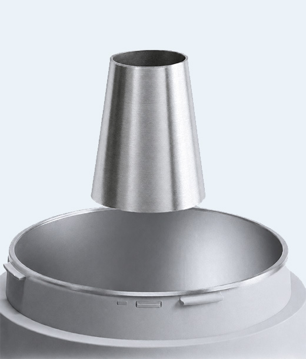
魔法瓶から着想した真空二重構造をタンク中央に配置。二重の円筒の間に設けた真空層が、熱を中心部に閉じ込め、加熱効率を高めます。
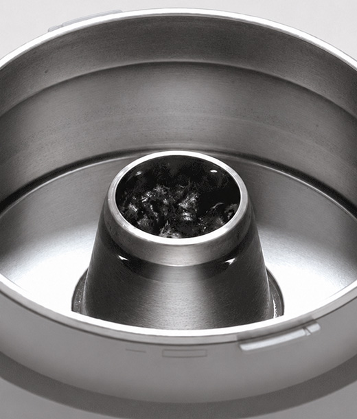
タンク全体ではなく、ヒーター周辺の限られた水を100℃まで加熱。必要量だけの加熱で、加湿開始スピードを大幅に短縮しました。
毎晩使うものだから、電気代を抑える省エネ設計。
必要な量だけを沸かす構造と、タンク内部の温度に応じて出力を自動制御するPTCヒーター。
2つの仕組みで余分な加熱を抑えます。
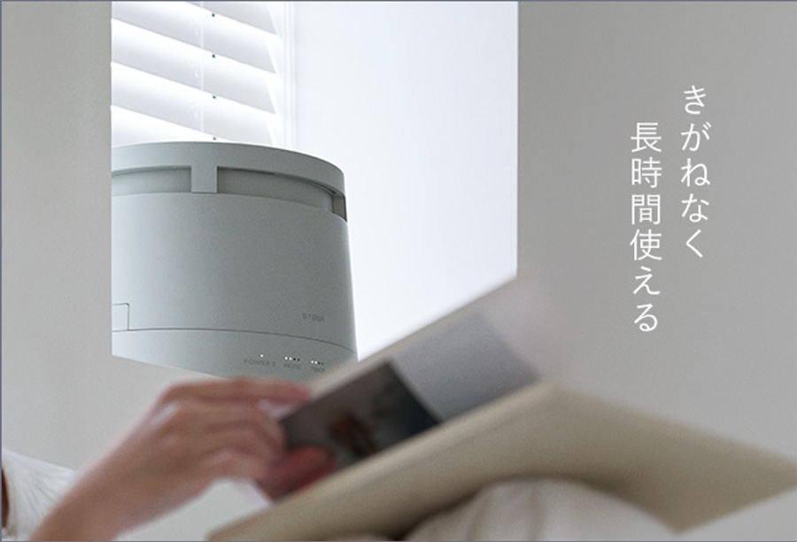
ヒーティングパイプで少量ずつ沸騰させ、スチーム圧制御バルブで大きな沸騰音を軽減。
沸騰後の運転音は、深夜の郊外レベルの静かさです。

空間との調和を意識した建築家発想のデザインで、
加湿器としての機能性と、インテリアとしても美しい佇まいを両立しました。
建築美をまとった独自の造形は、デザイン権※を取得。
※韓国意匠登録 第30-1242801-0000号


正面表示のないフラットタッチパネルが、生活感を排除しながら、高い操作性と視認性を実現。
スクリューフタと隠れハンドルにより、フタの開閉、本体の分離、給水、持ち運びまでスムーズに。
清潔さ、速さ、電気代、お手入れ、デザイン。
その一つひとつが、評価につながっています。
累計
58,000台
※2025年7月時点韓国最大EC（NAVER）「加湿器」検索
No.1
※2025年11月5日GOOD DESIGN KOREA 2025
iF DESIGN AWARD 2025
受賞
5分急速加熱技術
韓国特許 登録第10-2636833号
韓国意匠 出願第30-2023-0034574号
「想像以上！」の大反響、続々。
不満をなくすだけで、終わらない。
清潔な蒸気の通り道。
毎晩使える安心設計。
手間を減らす機能と、長く使える素材。
STENAは、独自の発想と技術で、
スチーム式を進化させました。
清潔な蒸気を、清潔なまま届ける。
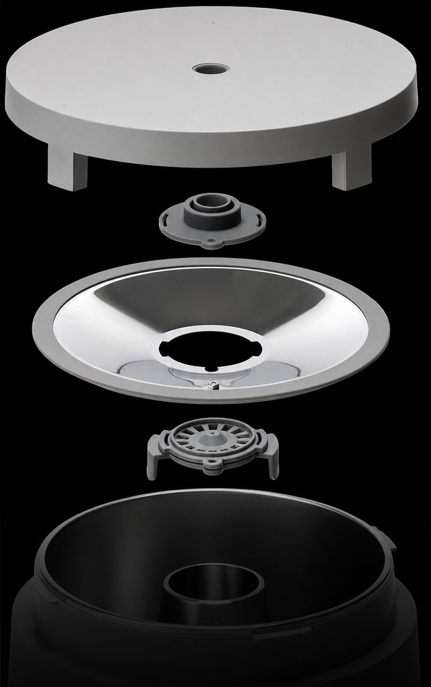
水が触れるタンクやヒーティングパイプ、蒸気の通り道には、POSCO 316TiステンレスとKCCプラチナシリコンを採用。
プラスチックを使わず、マイクロプラスチックや環境ホルモンの発生を抑える素材設計です。
熱や腐食に強い、高耐食ステンレス
200℃の耐熱性と低臭性に優れたシリコン
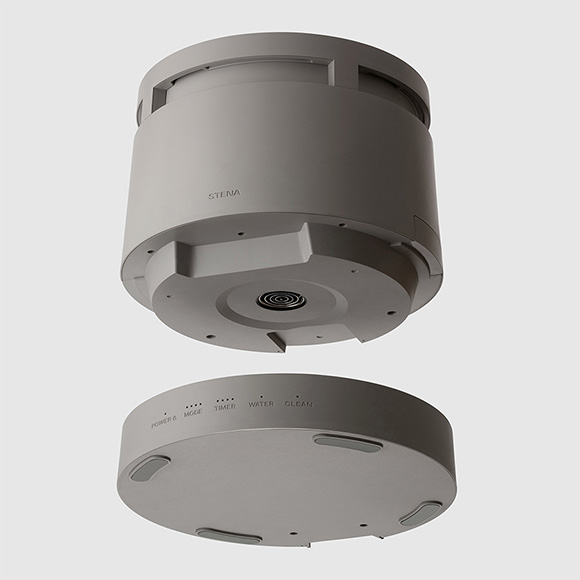
底面の滑り止めで設置時の安定性を確保。
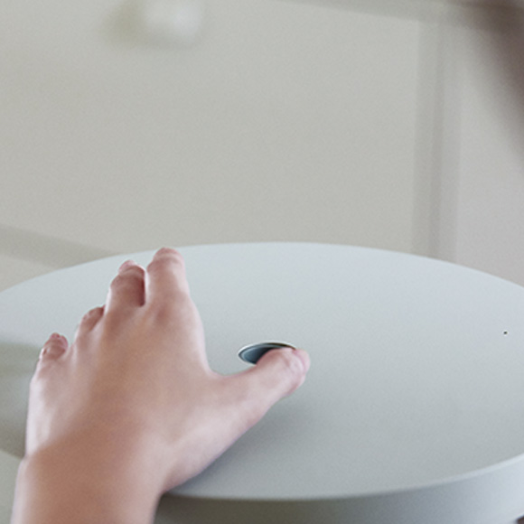
水切れやふたの開閉を検知すると自動停止。
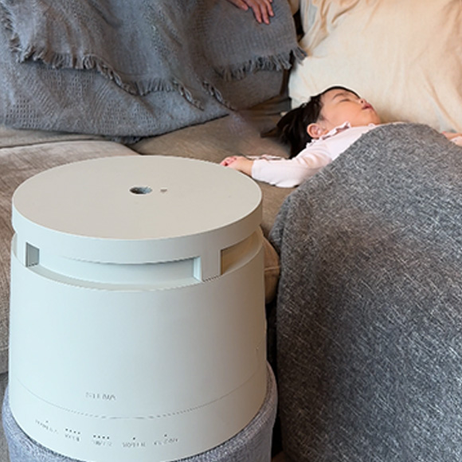
底面の広いワイドベースと低重心構造により、本体が揺れても倒れにくい設計。誤操作を防ぐチャイルドロックも設定できます。
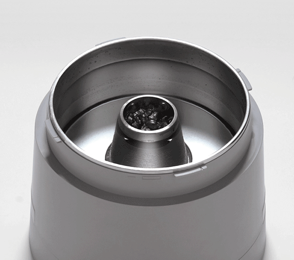
中心部で100℃まで加熱し、二重構造で外側への熱の伝わりを抑えます。内部のヒーティングパイプと外装の間に断熱エア層を設けることで、本体外側は約37℃に保たれ、熱くなりません。
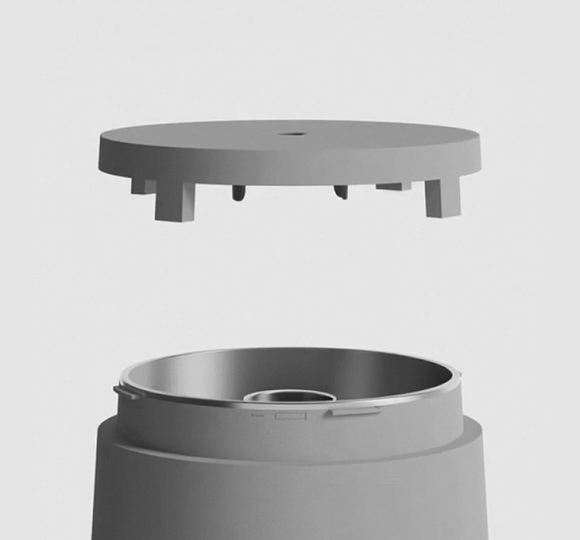
万が一、本体が傾いたり倒れたりしてもフタが外れにくく、熱いお湯がこぼれにくい安心構造です。
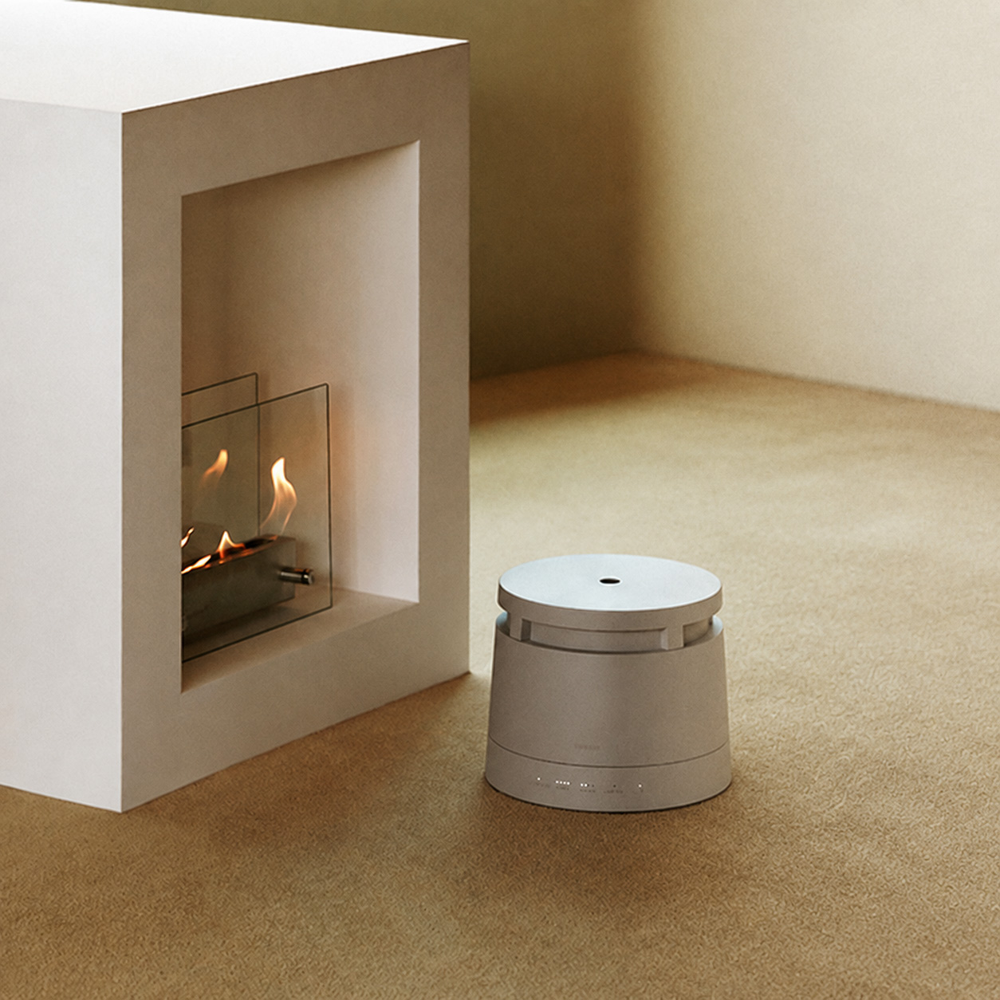
タンク内部の温度に応じて加熱を自動制御。過熱による火災リスクを抑えます。
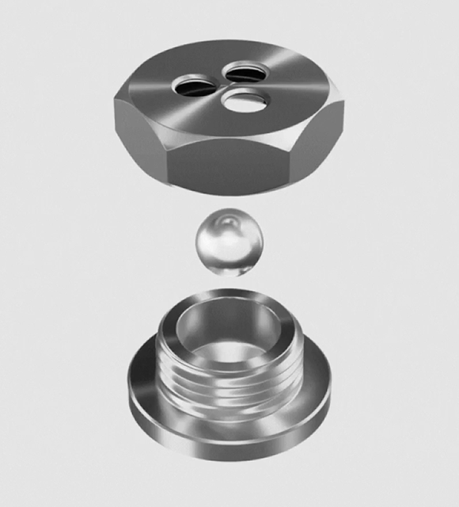
タンク内部の蒸気圧に応じて開閉するエアバルブを搭載。スチーム式でありがちな水飛びと沸騰音を抑えます。
1日1回の給水で朝から夜までしっとり
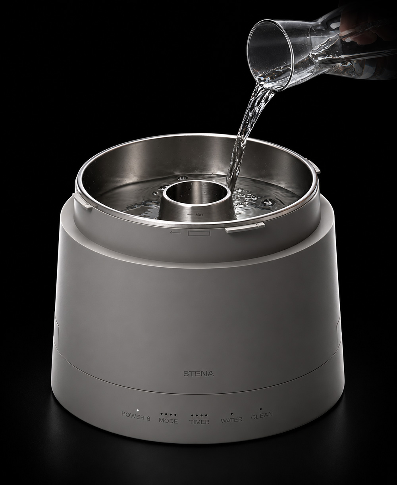
Lowなら約33時間、Turboでも約8時間分。何度も水を足す手間がありません。
Low・Med・Hi・Turboの4段階で、寝室の広さに合わせて加湿量を調整。2・4・6・8時間タイマーで、眠る時間に合わせて運転時間も設定できます。
適用面積・運転時間の目安
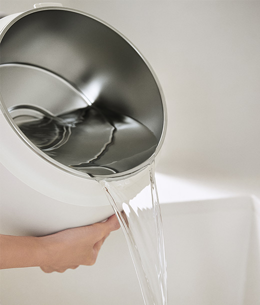
手が届きやすい、フラットなタンク。カルキ汚れは中央部分に集まりやすく、お手入れもスムーズです。オールステンレスなので、コーティング剥がれの心配もありません。

汚れが気になったときだけ、お手入れすればOK。毎日お使いの方も、週に1度CLEANモードを使えば、新品のようなキレイさをキープできます。
選び抜いた素材と、性能を支える職人の技術。
その一つひとつが、STENAの品質です。
長く清潔に使える
コーティングは、使ううちに少しずつ摩耗します。
一度剥がれてしまうと、家庭のお手入れでは元の状態に戻せません。
STENAは、タンク全体を316Tiステンレスそのものでつくりました。
コーティング剥がれの心配がなく、素材自体が劣化しにくい。
だから、清潔に使い続けられます。
コーティングがないから
無垢・無塗装だから
コーティングの劣化を気にせず、クエン酸で繰り返し洗浄できます。
洗うたび、無垢ステンレス本来の清潔さと輝きが蘇ります。
6か月、9回に及ぶ金型修正を重ね、理想の円錐角度を導き出しました。
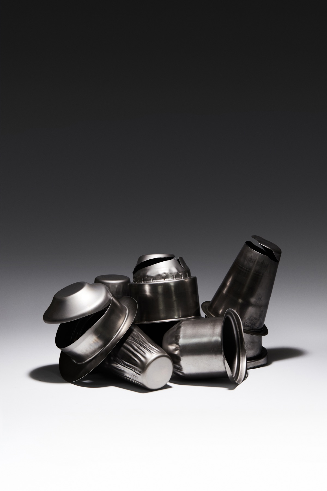
切断から最終仕上げまで、熟練のステンレス職人が一つひとつ手作業で担当します。
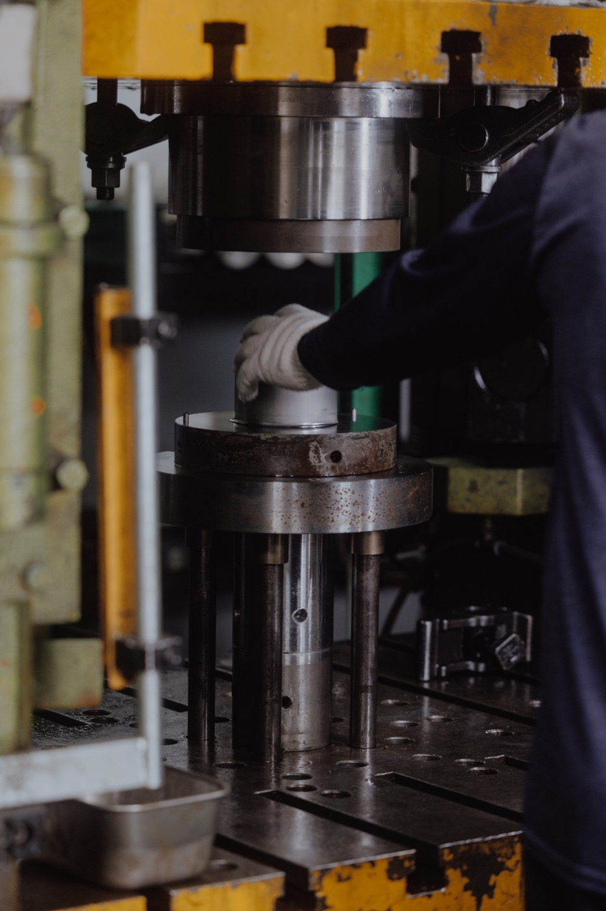
約5分の加熱を支える、水流を乱しにくい滑らかさ。研磨後は指先でも段差を感じにくく、水垢が付きにくい仕上げです。
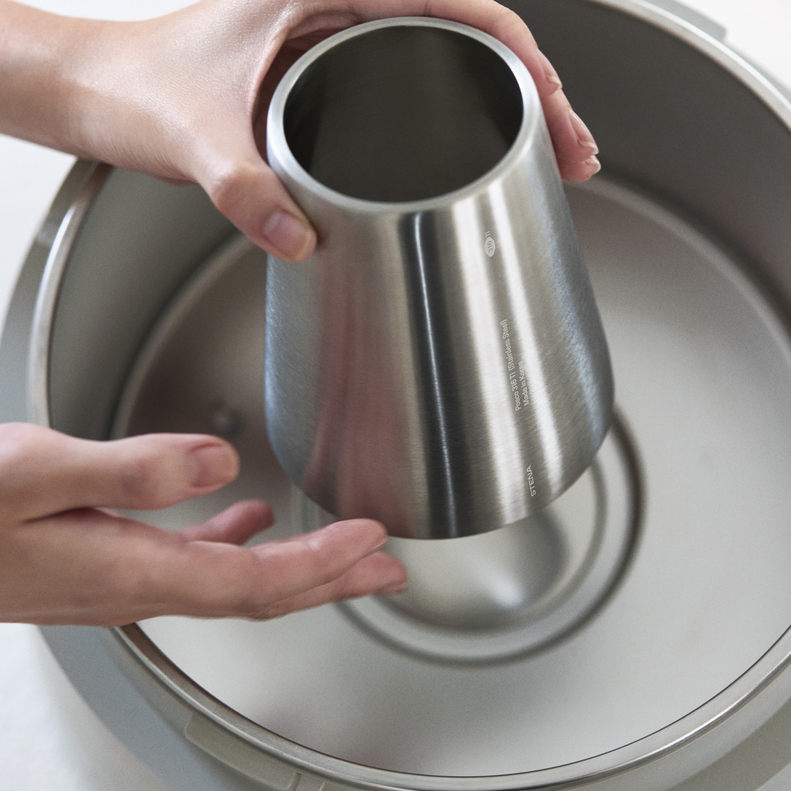
量産ラインでは再現が難しい、精密さと気密性をめざした構造。このヒーティングパイプこそ、STENAの心臓部です。
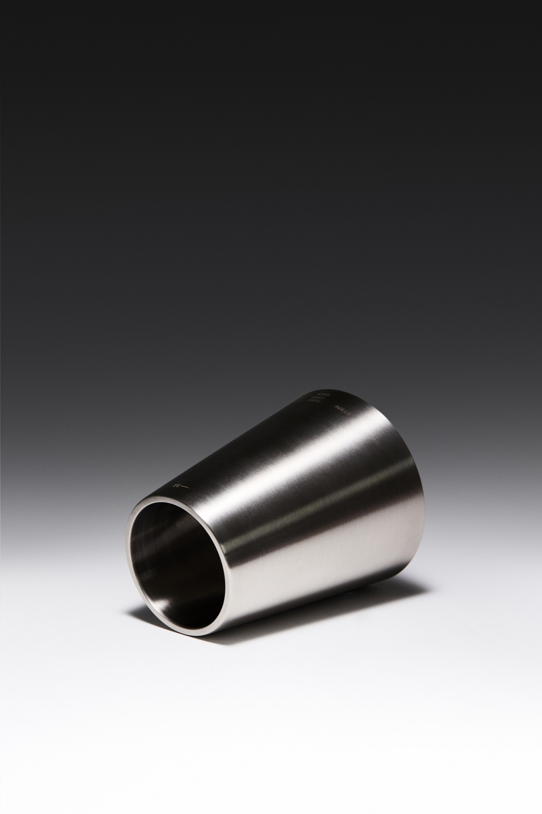
壁から10cm離す
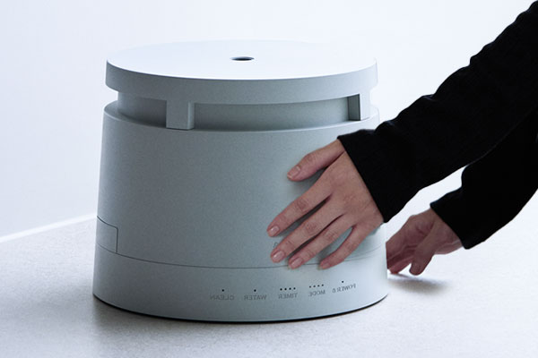
MAXラインの下まで給水
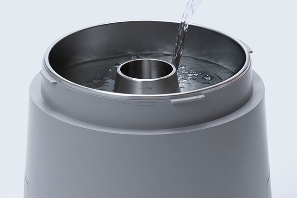
〈POWER〉長押しでチャイルドロック設定/解除
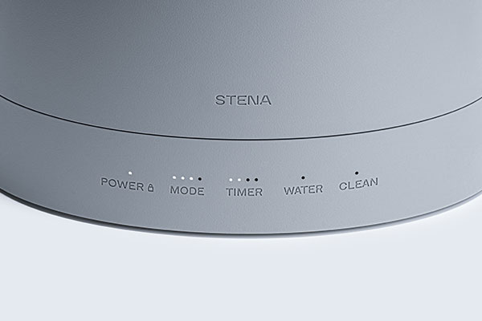
Low/Med/Hi/Turboの4つのモードが選べます
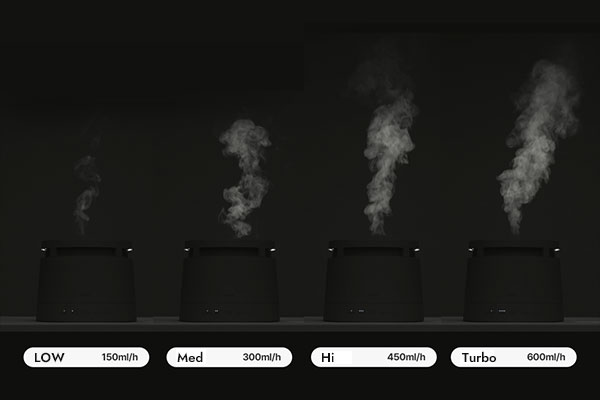
2h/4h/6h/8h が設定できます
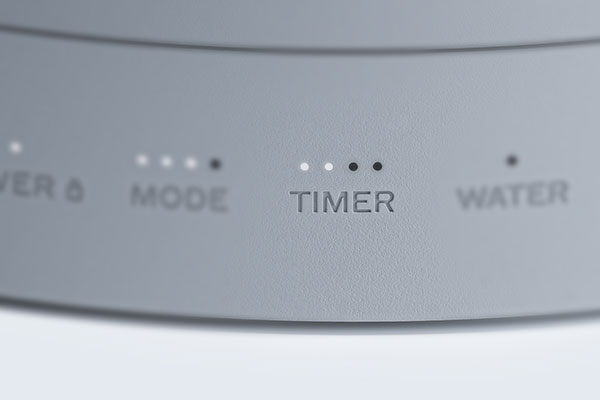
クエン酸10gを入れ〈CLEAN〉を押して30分待つ
カルキのこびりつきを防ぐため、週1回程度のお手入れを推奨しています
※カルキは人体に悪影響はありませんが、加湿量が減る場合があります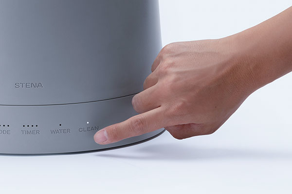
乾燥した室内は、あなたの体に負担になりやすい状態をつくります。
粘膜が乾くと不快を感じやすく、ホコリなども入り込みやすい状態になりがちです。
表皮の潤いが奪われると粉吹き・かゆみ・メイク崩れの原因に。
衣類や髪がまとわり付き、ホコリの吸着やバチッとした不快感が増加。
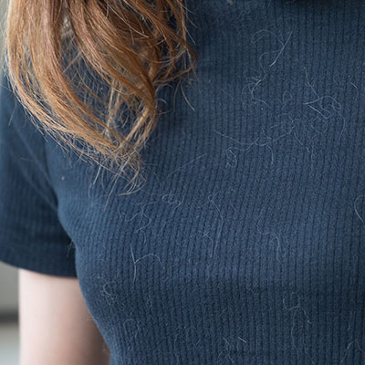
湿度が低いと体感温度が下がり、設定温度を上げる悪循環に。
あなたの「困った」を、STENAがサポートします。
STENAなら約5分加熱のあたたかいスチームが、就寝中もうるおいを保ちやすく、朝のイガイガを感じにくい環境づくりに。
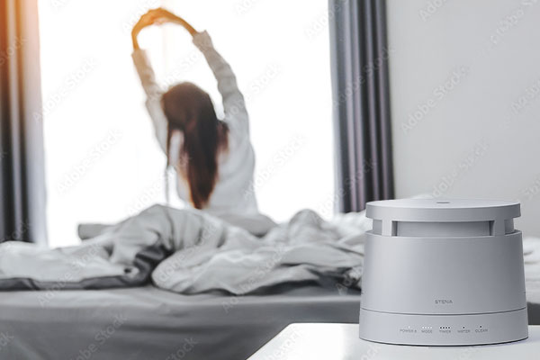
厳選した素材を通った蒸気で、衛生面に配慮した設計。倒れても水飛びしにくい安全構造です。
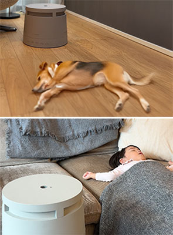
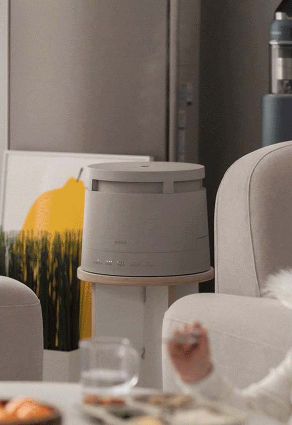
建築家デザインのミニマルフォルムと落ち着いたカラーでインテリアに自然に溶け込みます。
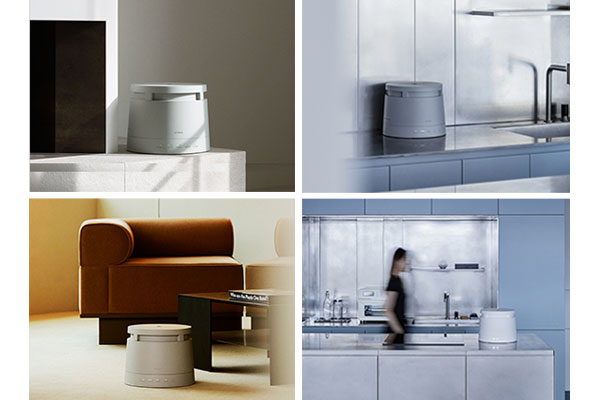
クリーンモードと、プラスチックを使わない蒸気経路で、週1回ワンタッチのお手入れがしやすい。
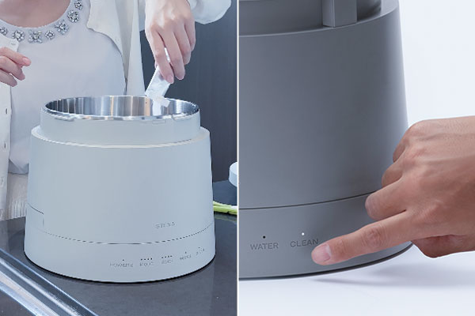
PTCヒーターの省エネ制御で、1日10時間使っても1日わずか約30円※。
※LOWモードでの使用の場合。32円/1kWhで算出。実際の電気料金はご使用環境やモード、電力会社によって異なります。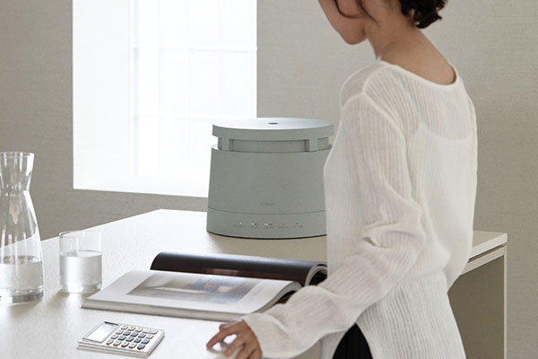
STENAが目指したのは、
10年後もずっと愛せるデザインと、
使い込むほど美しい品質です。
コーティングの剥がれに悩まされることは、
もうありません。
医療グレードの無垢ステンレスは、
手入れをするたびに、
買った日の輝きを取り戻します。
流行に流されず、良いものを長く、
愛着を持って使い続ける。
もう、妥協して選ぶ必要も、
買い替える必要もありません。
はい、使えます。清潔な水道水、または純水をご使用ください。
毎日ご使用の場合、カルキの付着防止のため週1回の自動洗浄モードでのお手入れをおすすめしています。カビや雑菌が発生しにくい設計ですが、カルキの付着により特有の臭いが発生したり、蒸気量が少なくなる場合があるためです。（人体には無害とされています）
不要です。フィルターを使用していないので、タンク以外の部品の交換やお手入れの必要はありません。
使用時間、加湿モードによって異なりますが、1日10時間の使用で約30円～125円程度（※１）となります。同クラスの一般的なスチーム式加湿器に比べて、約30～50％（※２）ほど電気代を抑えられる設計です。
※１ 日本一般家庭の電力単価：32円/kwh（目安）で算出。実際の電気料金はご使用環境、電力会社の料金体系、運転条件などにより変動します。適応畳数・平米数は加湿モードによって異なり、下記が目安となります。
アロマオイルは対応していません。
水切れやふたや本体が正しくロックされていない場合、自動で電源がOFFになる安全装置を搭載していますので、空焚きなどの事故を防止します。
STENAはスチーム式では類をみない”スチーム圧制御バルブ”を搭載しているため、水飛びで高温のお湯が吹き出すことがなく、表面も熱くなりにくいので、小さなお子様やペットがいても安心しやすい設計です。また、チャイルドロック機能により誤操作を防ぎます。
STENAはターボモードでも33dBと図書館ほどの静かさで、就寝時も快適にご使用いただけます。スチーム式でよくある沸騰音も、心地よい雨音のような音で、リラックスしやすい雰囲気をつくります。
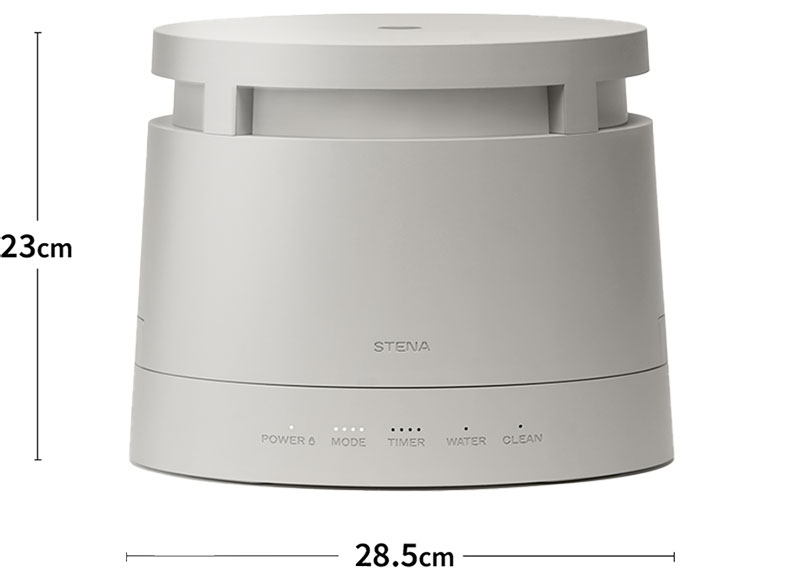

医師コメント
加湿器は“方式”で
選ぶべきです
to clinic shibuya 院長
荘子 万可 先生
適切な加湿は、喉や鼻の粘膜の防御機能を保つうえで非常に重要です。乾燥した環境ではウイルスやアレルギー物質が粘膜に付着しやすく、感染や炎症のリスクが高まります。
スチーム式加湿器は雑菌が繁殖しにくく、衛生的に加湿できる点が医療的にも安心です。